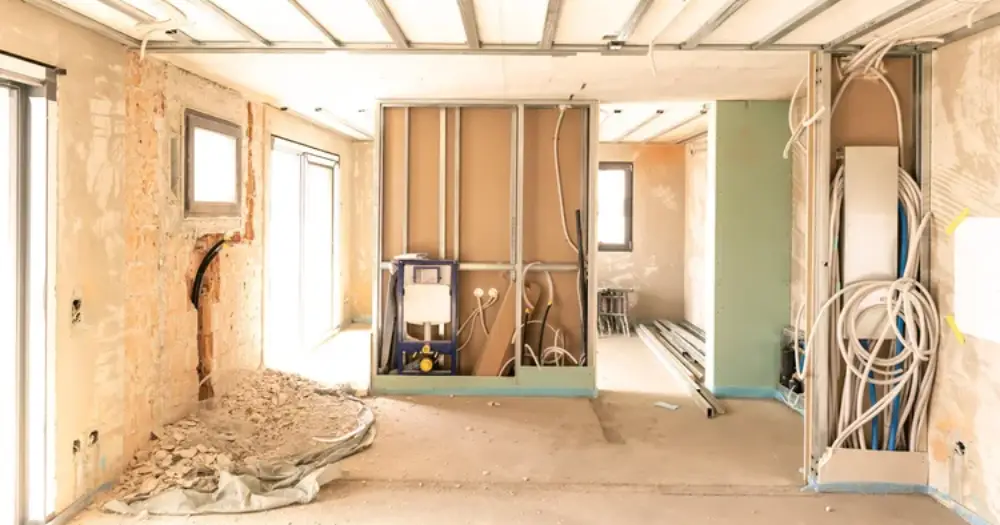

La rénovation de maison en Île-de-France connaît un véritable essor en 2026. Entre la hausse des prix de l'immobilier et les nouvelles réglementations énergétiques, rénover sa maison représente souvent une alternative plus économique et écologique que l'achat d'un bien neuf. Que vous souhaitiez améliorer les performances énergétiques de votre habitation, moderniser vos espaces ou simplement rafraîchir votre décoration, ce guide complet vous accompagne dans votre projet de rénovation. Découvrez les tendances 2026, les prix du marché francilien et nos conseils d'expert pour réussir vos travaux.
Pourquoi Rénover sa Maison en Île-de-France en 2026 ?
Le marché immobilier francilien pousse de nombreux propriétaires vers la rénovation plutôt que la revente. Avec un prix moyen au m² dépassant les 10 000€ dans Paris et ses proches banlieues, rénover devient une stratégie gagnante. Les nouvelles normes RE2020 et l'obligation de rénovation énergétique pour les passoires thermiques renforcent cette tendance. De plus, les aides publiques 2026 comme MaPrimeRénov', l'éco-PTZ renforcé et les CEE offrent des opportunités de financement attractives. Une rénovation bien menée peut augmenter la valeur de votre bien de 15 à 25% tout en divisant par deux vos factures énergétiques.
Les Avantages Économiques de la Rénovation
En Île-de-France, rénover coûte généralement entre 800 et 1 500€/m² selon l'ampleur des travaux, soit bien moins qu'un achat dans le neuf. Les économies d'énergie générées permettent un retour sur investissement en 8 à 12 ans.
Types de Rénovation et Budgets 2026 en Île-de-France
Les projets de rénovation se déclinent en plusieurs catégories selon vos besoins et votre budget. La rénovation légère (rafraîchissement, peinture, sols) oscille entre 200 et 500€/m². La rénovation intermédiaire (cuisine, salle de bain, isolation partielle) nécessite un budget de 500 à 900€/m². Enfin, la rénovation lourde (restructuration, isolation complète, chauffage) peut atteindre 1 000 à 2 000€/m². En région parisienne, ces tarifs sont majorés de 10 à 20% en raison des coûts de main-d'œuvre et de logistique plus élevés.
Rénovation Énergétique : Priorité 2026
L'isolation représente le poste principal avec 80 à 150€/m² pour les combles, 100 à 200€/m² pour les murs extérieurs. Le changement de chauffage (pompe à chaleur, chaudière gaz condensation) coûte entre 8 000 et 15 000€ selon la surface.
Rénovation Esthétique et Fonctionnelle
Une cuisine équipée de qualité nécessite 15 000 à 25 000€, une salle de bain complète 8 000 à 15 000€. Les revêtements de sol varient de 30€/m² (stratifié) à 100€/m² (parquet massif).
Aides et Financements pour la Rénovation en 2026
L'année 2026 marque une évolution des dispositifs d'aide avec MaPrimeRénov' renforcée qui peut couvrir jusqu'à 90% des travaux pour les ménages modestes. L'éco-PTZ étendu permet d'emprunter jusqu'à 50 000€ sans intérêt pour les rénovations globales. Les Certificats d'Économies d'Énergie (CEE) offrent des primes substantielles : jusqu'à 4 000€ pour une pompe à chaleur, 20€/m² pour l'isolation. En Île-de-France, certaines collectivités proposent des aides complémentaires : la Région peut financer jusqu'à 1 500€ supplémentaires, certaines communes offrent des subventions locales pour la rénovation des centres-villes.
Cumul des Aides : Optimisez votre Financement
Un projet de rénovation énergétique de 25 000€ peut bénéficier de 15 000€ d'aides cumulées (MaPrimeRénov' + CEE + éco-PTZ), réduisant significativement le reste à charge pour le propriétaire.
Réglementations et Autorisations en Île-de-France
La rénovation en Île-de-France est encadrée par des règles strictes. Les Bâtiments de France contrôlent les secteurs sauvegardés parisiens et les monuments historiques, imposant des matériaux et couleurs spécifiques. Le Plan Local d'Urbanisme (PLU) de chaque commune définit les règles d'extension et de modification des façades. Depuis 2026, la RE2020 s'applique aussi aux rénovations lourdes, imposant des seuils de performance énergétique. Une déclaration préalable suffit pour la plupart des travaux intérieurs, mais un permis de construire est nécessaire pour les extensions de plus de 20m² ou modifiant l'aspect extérieur. Les copropriétés suivent des règles particulières nécessitant l'accord de l'assemblée générale pour les travaux affectant les parties communes.
Spécificités Parisiennes et Franciliennes
Paris impose des règles architecturales strictes : toitures en zinc, façades en pierre de taille pour les immeubles haussmanniens. La proche couronne applique souvent des règlements similaires pour préserver l'harmonie urbaine.
Choisir son Entreprise de Rénovation en Île-de-France
La sélection d'une entreprise de rénovation nécessite une attention particulière en région parisienne où l'offre est pléthorique. Vérifiez impérativement les certifications RGE (Reconnu Garant de l'Environnement) obligatoires pour bénéficier des aides. L'assurance décennale et la responsabilité civile professionnelle sont indispensables. Demandez systématiquement 3 devis détaillés et méfiez-vous des tarifs anormalement bas ou élevés. Une entreprise locale comme Mistral Pro Reno présente l'avantage de connaître les spécificités réglementaires franciliennes et les circuits d'approvisionnement optimaux. Privilégiez les entreprises proposant un suivi de chantier rigoureux et un service après-vente réactif.
Labels et Certifications Indispensables
Recherchez les labels Qualibat, QualiPAC pour les pompes à chaleur, ou Eco-Artisan. Ces certifications garantissent un niveau de compétence et ouvrent droit aux aides publiques maximales.
Mistral Pro Reno : Votre Expert Renovation Paris 17ème
Basée dans le 17ème arrondissement, Mistral Pro Reno intervient sur toute l'Île-de-France avec une expertise reconnue en rénovation énergétique et esthétique. Notre équipe certifiée RGE vous accompagne de l'étude de faisabilité à la réception des travaux.
Tendances et Innovations 2026 en Rénovation
L'année 2026 voit émerger de nouvelles tendances en rénovation. La domotique s'impose avec des solutions intégrées dès la conception : éclairage connecté, chauffage intelligent, sécurité automatisée. Les matériaux biosourcés gagnent du terrain : isolants en chanvre, lin, ouate de cellulose, offrant des performances équivalentes aux solutions traditionnelles avec un bilan carbone réduit. Le décloisonnement des espaces reste populaire, adapté au télétravail généralisé avec la création de bureaux intégrés. La rénovation énergétique s'oriente vers des solutions globales : pompes à chaleur hybrides, ventilation double flux avec récupération de chaleur, panneaux solaires en autoconsommation. Les cuisines ouvertes évoluent vers des espaces modulables avec îlots multifonctions.
Technologies Émergentes 2026
L'intelligence artificielle optimise désormais la gestion énergétique domestique, réduisant de 20% supplémentaires la consommation. Les matériaux à changement de phase régulent naturellement la température intérieure.
La rénovation de maison en Île-de-France en 2026 représente un investissement stratégique alliant valorisation patrimoniale et économies d'énergie. Avec les aides publiques renforcées et l'expertise d'entreprises spécialisées, vos projets deviennent plus accessibles que jamais. Mistral Pro Reno vous accompagne dans cette démarche avec une approche personnalisée et des solutions adaptées aux spécificités franciliennes. Notre équipe d'experts certifiés RGE vous propose un devis gratuit et détaillé pour concrétiser vos ambitions de rénovation.
Questions fréquentes
Quel budget prévoir pour rénover une maison de 100m² en Île-de-France en 2026 ?
Comptez entre 80 000 et 150 000€ pour une rénovation complète, selon le niveau de finition. Une rénovation énergétique seule nécessite 40 000 à 60 000€.
Quelles sont les principales aides disponibles en 2026 ?
MaPrimeRénov' (jusqu'à 20 000€), éco-PTZ (jusqu'à 50 000€), CEE (primes variables selon travaux), aides régionales et communales complémentaires.
Faut-il un permis pour rénover l'intérieur de sa maison ?
Non, une déclaration préalable suffit généralement. Le permis n'est requis que pour les modifications structurelles importantes ou les extensions.
Combien de temps dure une rénovation complète en Île-de-France ?
Entre 3 et 6 mois selon l'ampleur des travaux, avec des délais pouvant s'allonger en raison des contraintes urbaines franciliennes.
Pourquoi choisir Mistral Pro Reno pour ma rénovation ?
Expertise locale, certifications RGE, accompagnement dans les démarches d'aides, devis gratuit et service après-vente de qualité sur toute l'Île-de-France.
Besoin d'un devis pour votre projet ?
Obtenez une estimation gratuite en quelques clics avec notre simulateur.
Simulateur de Devis Gratuit